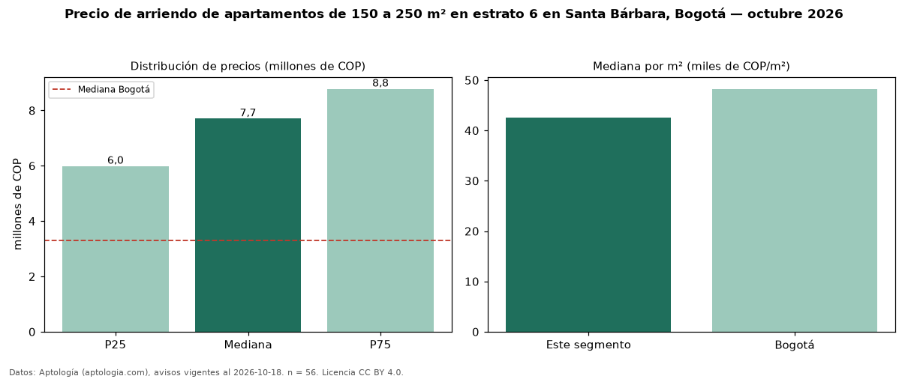

Precio de arriendo de apartamentos de 150 a 250 m² en estrato 6 en Santa Bárbara, Bogotá — octubre 2026
COP 7,70 millones al mes es el canon mediano de apartamentos de 150 a 250 m² en estrato 6 en arriendo en Santa Bárbara (localidad de Usaquén), Bogotá (n = 56 avisos). Frente a la mediana de los apartamentos en estrato 6 en arriendo de Santa Bárbara (COP 5,00 millones, n = 227), queda 54 % por encima; este segmento reúne el 25 % de esos avisos. Por metro cuadrado, la mediana es COP 42.500/m² al mes (n = 56), 12 % por debajo de los apartamentos en estrato 6 en arriendo de Santa Bárbara (COP 48.480/m²). El área mediana anunciada es 174 m². El segmento con más oferta es el de 3 o más habitaciones (52 avisos, mediana COP 7,90 millones). La administración mediana declarada es COP 1,50 millones al mes (n = 21), aparte del canon. La mediana de todos los apartamentos en arriendo de Bogotá es COP 3,30 millones (+133 % de diferencia). La mitad central de los avisos va de COP 5,99 millones a COP 8,78 millones (razón 1,5), una dispersión moderada. Datos: Aptología (aptologia.com), CC BY 4.0 — https://www.aptologia.com/arriendo/bogota/santa-barbara. Archivos: PDF, CSV con las cifras y gráfica PNG.

| Avisos únicos | 56 |
|---|---|
| Percentil 25 | COP 5.985.750 |
| Mediana | COP 7.700.000 |
| Percentil 75 | COP 8.775.000 |
| Mediana por m² | COP 42.500 |
Fuente: avisos vigentes de portales inmobiliarios recopilados por Aptología, deduplicados (mínimo 30 avisos únicos por celda). Precios pedidos, no cerrados. Fecha: 2026-10-18.